Waiting for Closure: Deep Networks Link Contours but Do Not Complete Them
Preprint, 2026
University of California San Diego
Can networks recognize outlines with the corners removed, or Kanizsa figures, better than the same pieces rotated in place? Each dot shows one network's accuracy: red = chance (0.10), green = 1.00; hover for the value.
Dots, left to right: VGG16 (frozen) · ResNet50 · ViT-B/16 · DINOv2-S · Looped ViT-B/16 · fGRU-H · γ-net · deep fGRU D4.
Abstract
Whether deep networks exhibit the Gestalt law of closure has been answered both ways, using stimuli that are rarely sized to the network's sampling grid and measures that are rarely checked against observers that cannot close contours. We built a patch-aware test battery in which every gap, inducer and dash is specified in units of the model's patch size and rendered natively, with same-ink controls that rotate, scramble or re-orient the pieces. We trained and tested 24 networks: frozen and fine-tuned CNNs and vision transformers, looped (weight-tied, recurrent-depth) transformers, and fGRU-H, γ-net and deep fGRU-H/fGRU circuits built from the published fGRU cell, including stacks of up to eight recurrent layers behind a CNN stem. Illusory contours are at best weakly represented: ViT-B/16 variants show a small but consistent advantage of Kanizsa figures over rotated-inducer controls (+0.08 to +0.14 across three fine-tuned seeds, +0.10 frozen), with Kanizsa accuracy of at most 0.39 (chance 0.10) against 1.00 on complete outlines; DINOv2-S shows an inconsistent advantage (+0.01 to +0.15 across seeds), and in the other networks it stays at or below +0.07, far from the fragment effects. Fine-tuned transformers do integrate fragmented outlines, and the arrangement carries the effect: scrambling piece positions while keeping orientations lowers accuracy by +0.46 to +0.65, and pieces placed correctly but misoriented are not recognized. Neither looping nor recurrence consistently adds closure: in five of six recurrent circuits a control trained with a single iteration matches or exceeds the eight-iteration network, although the recurrent states in the gap become more similar to those for the complete outline over iterations. Finally, we audited published closure measures with null observers. A blur reproduces the illusory-brightness signature reported for a predictive-coding network; a pixel-growth observer, which only sees how far ink lies from its centroid, scores +0.289 on the closure measure of Kim et al. (2021), several times any CNN, and rotating each corner in place about its own ink centroid, which removes the radial difference this observer detects, reduces the measure to +0.005 and +0.005 in the two networks previously reported to show closure most consistently. The configural-effect (CE) measure survives null observers and is specific to closing arrangements, but it generally grows as the outline approaches completion, its advantage over a non-closing arrangement gains nothing further, on average, from a fully closed square, and changes with inducer shape and size at a fixed ratio of luminance-specified to total edge length, which predicts the clarity of human illusory boundaries across display sizes (Shipley & Kellman, 1992). For CNN and recurrent networks the mid-gap closure index halves at gaps of 6–50 px, inside the network's measured effective receptive field in 9 of 10. Networks trained specifically to trace contours, including weight-tied looped transformers, link aligned pieces only across gaps a few pixels wider than in training and label almost none of the missing contour as contour. Deep networks group nearby, consistently oriented contour pieces; they do not close gaps, and illusory contours are at most weakly represented.
Across 24 networks, stimuli sized in patch units, same-ink controls and null observers show that deep networks group nearby, consistently oriented contour pieces but do not close gaps; illusory contours are at most weakly represented.
Stimuli
We train networks to classify regular polygons with 3 to 12 sides, the ten-way task of Zhang et al. (2024). We set all lengths in units of patch size P (16 px for ViT-B/16 and the CNNs, 14 px for DINOv2) and render images natively at 224 px with 4× supersampling, without resizing. Every class has a circumradius of 4.5P, so overall size carries no class information.
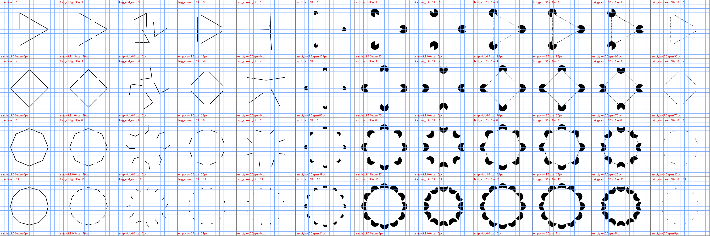
Illusory contours
Across all networks that learned the training task, using the first training seed of each, Kanizsa accuracy ranges from 0.04 to 0.39 (chance 0.10), and the Kanizsa closure index reaches at most +0.10 in frozen ViT-B/16. Across three to five training seeds of three networks, fragment closure indices and arrangement effects (accuracy in place minus accuracy with scrambled positions) replicate, with largest s.d. values of 0.03 and 0.05, respectively. The Kanizsa index is small but consistent in fine-tuned ViT-B/16 (+0.08 to +0.14, Kanizsa accuracy 0.18–0.35), inconsistent in DINOv2-S (+0.01 to +0.15) and near zero in ResNet50 (-0.05 to +0.07), against 1.00 accuracy on complete outlines in every case. Frozen and looped ViT-B/16 show indices of the same size: ViT-B/16 carries a weak illusory-contour signal, consistent across seeds only in this network. Class-specific relevance maps (Chefer et al., 2021) for the top-1 class illustrate this pattern: the networks label Kanizsa triangles and squares as hexagons and give their rotated inducers the same label.
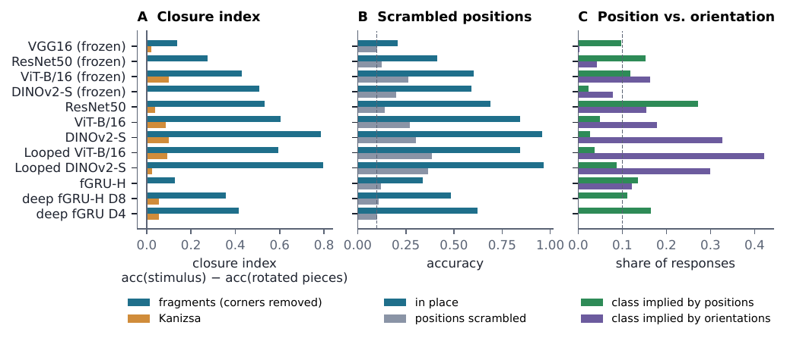
Fragment arrangement
With corners removed, fine-tuned ViT-B and DINOv2 (plain and looped) classify fragmented outlines at 0.84–0.96 in the orientation-control battery, a separate test set with fragments in place, scrambled and in cue conflict, at gaps of 0.5–2P. Their closure index across all gap sizes in the main battery is +0.60 to +0.80. Frozen backbones reach half to 70% of that, and fine-tuning raises the index 1.4–2× within each family. Scrambling positions while preserving orientations drops the fine-tuned transformers to 0.27–0.39, so arrangement adds +0.46 to +0.65 beyond orientation statistics.
Across layers
We apply the linear probe at every layer and find that fragment closure in fine-tuned transformers rises through the middle blocks and peaks late (ViT-B +0.68, DINOv2-S +0.79). In looped ViT, it reaches +0.73 by the fourth pass through the shared core and gains at most about 0.02 with further iterations. Additional loops therefore add depth without adding closure. Frozen ViT-B peaks at +0.60, and fine-tuned ResNet50 peaks at +0.52 in its last stage.
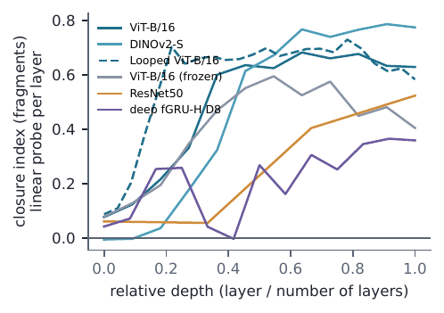
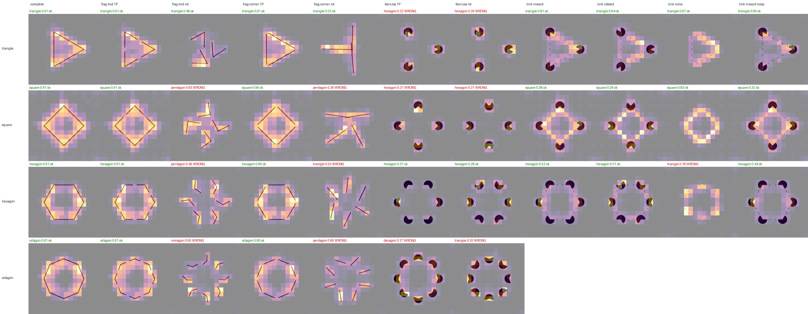
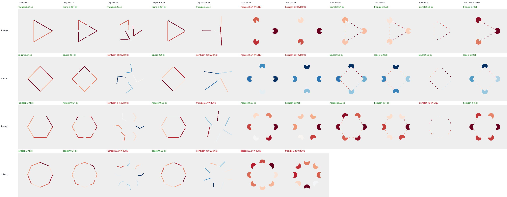
Recurrence
Looping a fine-tuned transformer changes the fragment closure index by -0.01 to +0.01. Recurrence does not consistently improve this index: in 5 of 6 circuits, the single-iteration control is within 0.02 of, or above, its eight-iteration counterpart (for example, fGRU-H, +0.13 versus +0.18), and the one gain, +0.08 in deep fGRU D4, comes from a single seed. Gap similarity increases over iterations in fGRU-H and fGRU circuits, from 0.28 to 0.35 in fGRU-H, 0.17 to 0.42 in γ-net and 0.35 to 0.37 in eight-layer deep fGRU-H. These increases do not consistently accompany a higher closure index. Across recurrent circuits, the Kanizsa index reaches at most +0.06 (single-iteration controls +0.04), so recurrence adds no illusory-contour signal either.
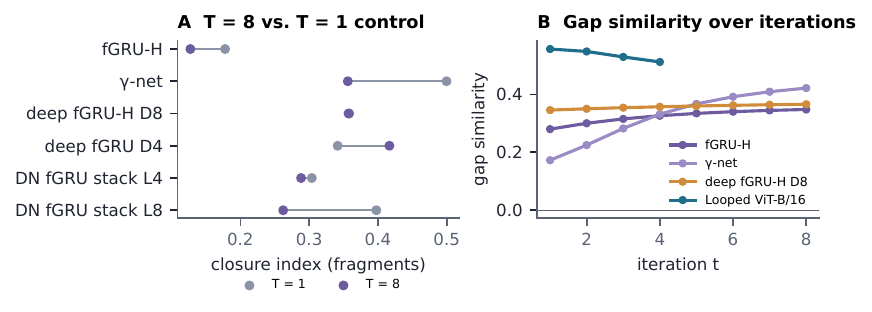
Contour tracing
Our recurrent circuits learned from complete outlines, a task that never demands long-range integration, so we also probed networks trained to segment the dashed contour carrying a marker, a Pathfinder-style curve-tracing task (Jolicoeur et al., 1986; Roelfsema et al., 1998). These networks include an hGRU, two xhGRUs trained on contours of 6 and 14 dashes, an fGRU/γ-net and weight-tied looped local-attention transformers. The companion project calls its models xhGRUs when it replaces the hGRU's per-iteration batch normalization with group normalization (Wu & He, 2018) shared across iterations. We took these networks from that project without retraining; their validation intersection-over-union (IoU) is 0.92–0.996 on 128 px images, and 0.80 for the untied control below. The training target is the full dashed contour, so a network that completes gaps has no reason to label them.
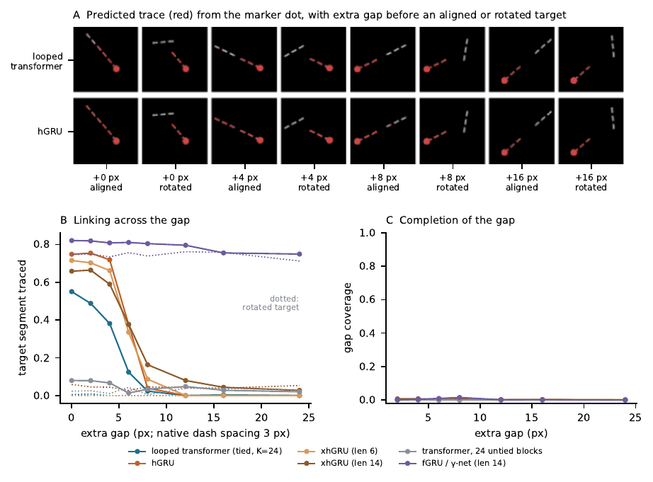
Gap size
Accuracy separates the network families when plotted against the number of ink-free patches a gap crosses; we did not test whether this count predicts accuracy better than gap size. For 3–6-sided polygons, we average over gaps crossing three or more empty patches, weighting bins of 3, 4, 5 and 6 or more empty patches equally. Fine-tuned transformers score 0.78–0.99, while CNNs and the representative fGRU-H/fGRU circuits score 0.10–0.39.
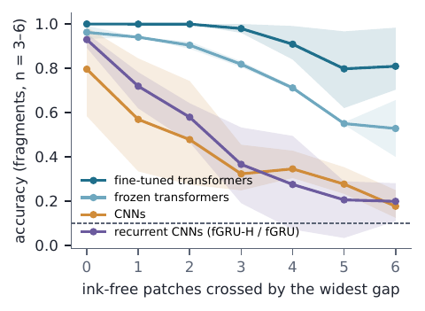
We define the critical gap g* as the gap where the mid-gap closure index falls to half its value at the smallest gap, using linear interpolation in log gap; no network meets the exclusion threshold of an index below 0.05 at the smallest gap. We compute the index on a fixed set of 3- to 6-sided polygons, for which every gap size is valid, and compare g* with measured ERF50 for CNNs and recurrent circuits and with patch size for transformers. Excluding single-iteration controls, CNN and recurrent networks have g* values of 6 to 50 px, with smaller residual effects possible beyond this point; in 9 of 10 networks, the full critical gap is smaller than ERF50, a radius (median ratio 0.44; 14 of 16 including single-iteration controls). The rank correlation with ERF50 is only +0.33, and the exception, excluding single-iteration controls, is fGRU-H with a 1×1 readout, which adds no spatial convolution after recurrence and has the largest fragment closure index of any recurrent circuit (+0.63). We measure ERF50 on noise images and, for deep hierarchies, at the first recurrent layer, so the comparison is descriptive: the gap fits within the region that influences a unit, but this does not show that the network uses that region for the task.
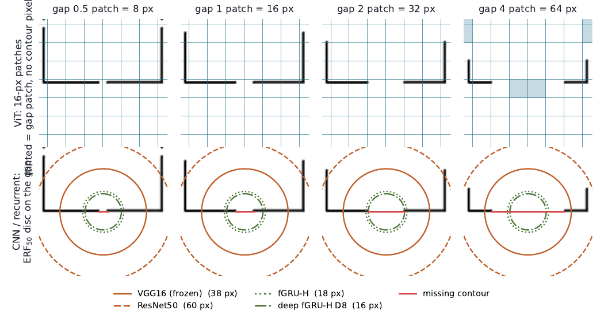
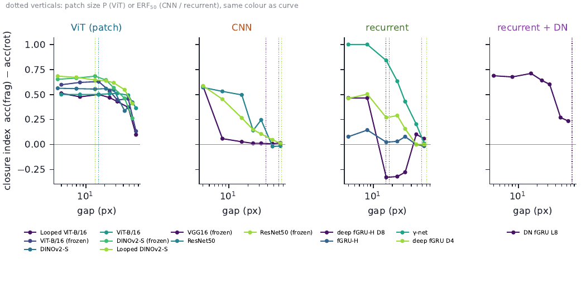
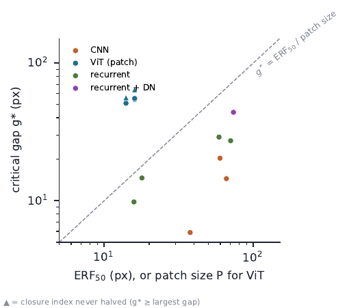
Inside the gap
A network that completes a contour should represent something where the piece is missing. We tested this with mid-gap fragments of 3- to 6-sided polygons, their rotated controls and matching complete outlines, using up to 48 image triplets per gap size. We sampled spatial features after each transformer block before final normalization, at the four ResNet50 stages and, for recurrent circuits, from the layer the classifier reads at every iteration. We selected cells that the missing contour passes through and that contain no visible ink in either the stimulus or the control.
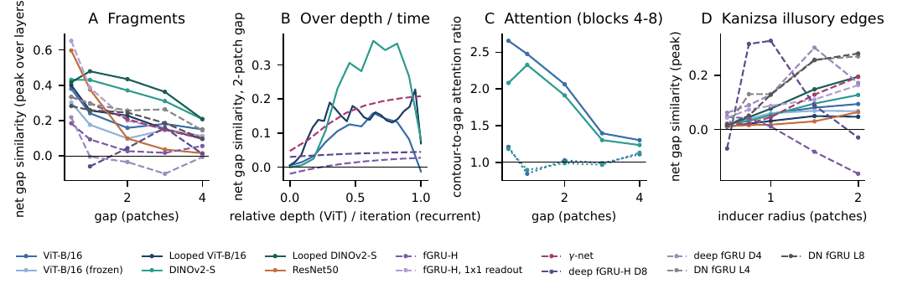
By boundary completion (Grossberg & Mingolla, 1985), we mean a process that extends a contour from its ends into an empty gap over successive layers or iterations until the ends meet. Near ink, overlapping receptive fields and attention to neighbouring tokens make empty gap cells resemble the drawn contour. Farther away, that resemblance declines, though it remains above zero at four patches in transformers. We find no evidence that a process carries one contour end across the empty region to meet the other.
Auditing published measures
We recreated each measure's stimuli from its published specification and tested trained networks alongside null observers that cannot close contours: untrained networks, a Gabor energy bank, raw pixels and a pixel-growth observer. We used three seeds for untrained networks in the closure-measure audit and one for the extended configural-effect controls; the brightness audit uses no networks. Our pixel-growth observer represents ink's radial distribution around its centroid as a 20-bin histogram over distances of 0–120 px, normalized to sum to one: it discards angular information, but shape and arrangement can still change the radial distribution, and it differs from the pixel-by-pixel overlap controlled by Kim et al. (2021). The pixel observer is the image itself, average-pooled to 75×75. The Gabor observer uses a fixed bank of quadrature-pair filters with wavelengths of 4, 8 and 12 px and eight orientations, with energy average-pooled to a 14×14 grid; it represents oriented edge energy without grouping.
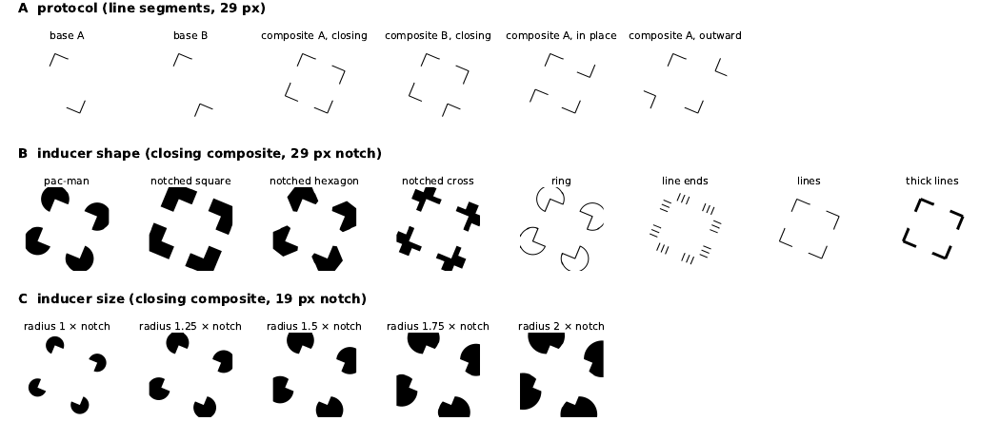
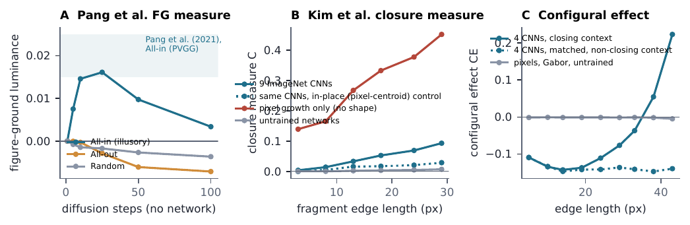
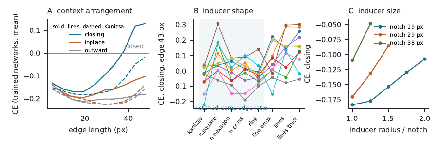
Saliency maps
Saliency overlays often serve as evidence that a network “sees” a triangle. We tested each map by deleting ink in map order or random order (Petsiuk et al., 2018), calling the resulting score faithfulness in the sense used by Selvaraju et al. (2017). Grad-CAM (Selvaraju et al., 2017) and class-specific relevance maps (Chefer et al., 2021) have a median faithfulness of +0.020 and score near zero (|·|<0.02) for 7 of 16 networks. Occlusion (Zeiler & Fergus, 2014) and Shapley values computed over the stimulus's own pieces score +0.051 and +0.043; we ran occlusion on a subset of 40 images per network. This provides separate evidence from the sanity checks of Adebayo et al. (2018), which Grad-CAM passed and which test a different property.
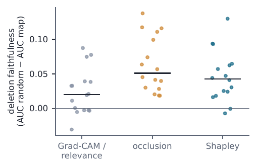
Results for all networks
| Network | complete | frag. | CI frag. | scrambled | conflict: pos. | conflict: ori. | Kanizsa | CI Kan. | Brain-Score* |
|---|---|---|---|---|---|---|---|---|---|
| VGG16 (frozen) | 0.99 | 0.25 | +0.14 | 0.10 | 0.10 | 0.00 | 0.14 | +0.02 | 0.37 |
| ResNet50 (frozen) | 0.97 | 0.41 | +0.27 | 0.12 | 0.15 | 0.04 | 0.20 | -0.00 | 0.38 |
| ViT-B/16 (frozen) | 1.00 | 0.62 | +0.43 | 0.26 | 0.12 | 0.16 | 0.29 | +0.10 | – |
| DINOv2-S (frozen) | 0.97 | 0.63 | +0.51 | 0.20 | 0.02 | 0.08 | 0.19 | +0.00 | 0.35 |
| ResNet50 | 1.00 | 0.66 | +0.53 | 0.14 | 0.27 | 0.15 | 0.18 | +0.04 | 0.34 |
| ViT-B/16 | 1.00 | 0.82 | +0.60 | 0.27 | 0.05 | 0.18 | 0.29 | +0.08 | – |
| DINOv2-S | 1.00 | 0.94 | +0.79 | 0.30 | 0.03 | 0.33 | 0.25 | +0.10 | 0.34 |
| Looped ViT-B/16 | 1.00 | 0.81 | +0.60 | 0.39 | 0.04 | 0.42 | 0.39 | +0.09 | – |
| Looped DINOv2-S | 1.00 | 0.97 | +0.80 | 0.36 | 0.09 | 0.30 | 0.20 | +0.03 | 0.31 |
| fGRU-H | 1.00 | 0.32 | +0.13 | 0.12 | 0.14 | 0.12 | 0.15 | -0.00 | – |
| fGRU-H (T=1) | 1.00 | 0.30 | +0.18 | 0.18 | 0.09 | 0.11 | 0.14 | +0.00 | – |
| fGRU-H, 1x1 readout | 1.00 | 0.78 | +0.63 | 0.68 | 0.05 | 0.70 | 0.07 | -0.00 | – |
| γ-net | 1.00 | 0.58 | +0.36 | 0.41 | 0.08 | 0.52 | 0.04 | +0.00 | – |
| γ-net (T=1) | 1.00 | 0.68 | +0.50 | 0.56 | 0.09 | 0.53 | 0.12 | +0.04 | – |
| deep fGRU-H D8 | 1.00 | 0.54 | +0.36 | 0.11 | 0.11 | 0.00 | 0.16 | +0.06 | – |
| deep fGRU-H D8 (T=1) | 1.00 | 0.51 | +0.36 | 0.10 | 0.10 | 0.00 | 0.11 | +0.03 | – |
| deep fGRU D4 | 1.00 | 0.55 | +0.42 | 0.10 | 0.16 | 0.00 | 0.17 | +0.06 | – |
| deep fGRU D4 (T=1) | 1.00 | 0.51 | +0.34 | 0.15 | 0.10 | 0.03 | 0.18 | +0.03 | – |
| DN fGRU stack L4 | 1.00 | 0.51 | +0.29 | 0.24 | 0.15 | 0.12 | 0.13 | -0.01 | – |
| DN fGRU stack L4 (T=1) | 1.00 | 0.49 | +0.30 | 0.24 | 0.01 | 0.16 | 0.09 | +0.01 | – |
| DN fGRU stack L8 | 1.00 | 0.41 | +0.26 | 0.29 | 0.12 | 0.10 | 0.10 | -0.00 | – |
| DN fGRU stack L8 (T=1) | 1.00 | 0.61 | +0.40 | 0.40 | 0.01 | 0.21 | 0.11 | -0.00 | – |
| VGG16 (Zhang data)† | 0.29 | 0.19 | +0.06 | 0.12 | 0.11 | 0.01 | 0.17 | +0.00 | – |
| ResNet50 (Zhang data)† | 0.39 | 0.28 | +0.15 | 0.13 | 0.13 | 0.03 | 0.10 | +0.00 | – |
All networks. complete: accuracy on complete outlines; frag. and CI: accuracy and closure index for corner-removed fragments of the main battery; scrambled and cue conflict: the orientation-control battery (a different set of fragments, so scrambled cannot be subtracted from frag.); Kanizsa: accuracy and closure index; Brain-Score*: mean of public-split V1, V2, V4, IT and behavioural benchmarks run locally (Schrimpf et al., 2020) (not the leaderboard score; computed for a subset of networks, “–” otherwise). †Trained on the stimuli of Zhang et al. (2024) (validation accuracy 0.88 and 0.85 on those stimuli); they transfer poorly to our battery.
BibTeX
@article{tenwolde2026closure,
title = {Waiting for Closure: Deep Networks Link Contours but Do Not Complete Them},
author = {TenWolde, Benjamin},
journal = {arXiv preprint},
year = {2026}
}